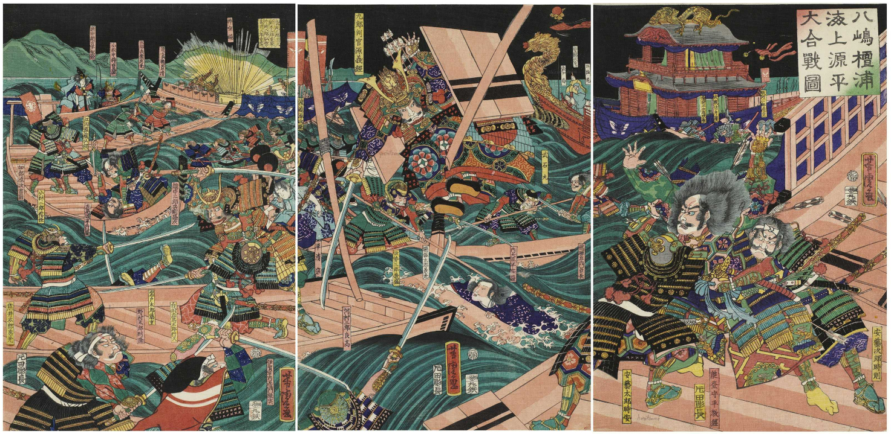
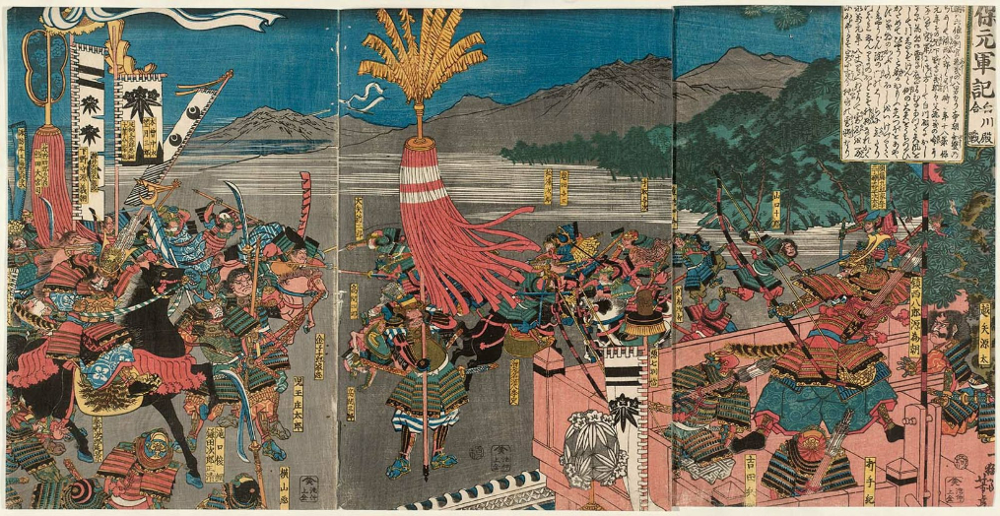
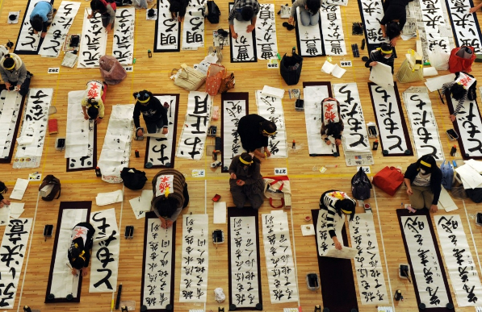

Японский язык и письменность
Введение
Японский язык (яп. 日本語 нихонго (инф.)) — язык японцев и фактически государственный язык Японии, со спорным систематическим положением среди других языков. Несмотря на то, что статус японского языка юридически не установлен, вся официальная документация и японские законы написаны на этом языке. В школах Японии изучения языка предусмотрено в рамках учебной дисциплины «национальный язык». Точные данные о числе говорящих на японском языке отсутствуют. Существует предположение, что их число превышает 130 миллионов человек. Это число включает в себя жителей Японии, японо-американцев, проживающих за её пределами, а также жителей регионов, когда-либо находившихся под управлением Японии. Оно в зависимости от статистики может варьироваться, но тем не менее Японский язык входит в десятку языков мира по количеству носителей.Генетические связи японского языка не до конца выяснены. Выделяются два слоя лексики, один из которых имеет параллели в алтайских языках, другой — в австронезийских языках; вероятнее, исконен алтайский слой. Обладает оригинальной письменностью, сочетающей идеографию и слоговую фонографию. По грамматическому строю — агглютинативный с преимущественно синтетическим выражением грамматических значений.
Название
Употребительны два названия японского языка. В контексте других языков мира, преподавания иностранцам японского языка за рубежом используется название нихонго (日本語), то есть дословно «японский язык». Однако как часть национальной культуры, как предмет обучения в Японии, как родной и государственный язык обычно он называется кокуго (国語), буквально: «язык страны» или «национальный язык» (термин может применяться не только к японскому языку, но по умолчанию означает именно его).
Распространение в мире
Бо́льшая часть японоговорящих проживает на Японском архипелаге. Также наблюдается употребление языка японскими эмигрантами в некоторых областях Северной и Южной Америки (Калифорния, Гавайские острова, Бразилия, Перу). Японский доступен для изучения в школах большинства стран Азии и Океании. В 2012 году наибольшее количество изучающих японский язык за пределами Японии было в Китае (более 1 млн), Индонезии (более 870 тыс.), Корее (более 840 тыс.), Австралии (около 300 тыс.), на Тайване (более 230 тыс.), в США (более 130 тыс.) и в Таиланде (около 130 тыс.). Японский язык является одним из трёх официальных языков штата Ангаур (население — чуть более трёхсот чел.) Республики Палау, наряду с английским и палау.
Классификация
Генетические связи японского языка до конца не выяснены. Японский обычно рассматривается как изолированный язык (если включать его в одну группу с рюкюскими — японо-рюкюские языки). Наиболее сильная из прочих гипотез — о родстве с корейским языком (грамматическая структура японского языка весьма близка корейскому, немало слов языка государства Когурё и, в меньшей степени, других пуёских языков, находят параллели в древнеяпонском языке); также высказывается предположение о наличии австронезийского лексического субстрата и алтайского грамматического суперстрата; некоторую популярность набрала гипотеза о принадлежности японского к алтайским языкам. , однако в последнее время алтайская теория всё больше подвергается критике.
История
Как и систематическое положение, ранняя история японского языка — крайне спорный вопрос. Сторонники версии об алтайском (пуёском) происхождении японского языка относят его формирование к периоду активного этапа миграции на Японские острова пуёских племён — выходцев с азиатского континента, язык которых испытал влияние автохтонов-австроазиатов японских островов (ближе всего родственным аборигенам Тайваня).
Примерно в VI веке н. э. (но возможно и ранее) происходит активное внедрение китайской культуры в результате дипломатических отношений японских правителей Ямато, Китая и древнекорейского государства Пэкче, являвшегося важным центром экспорта континентальной (китайской) культуры в Японию. Вместе с приходом государственного устройства, ремёсел, культуры и искусства, буддизма, в Японии появляется письменность. «Кодзики» и «Нихон Сёки» — первые крупные японские литературные произведения. В этот период в японском языке появились многочисленные китайские слова, и по сей день 60 % словарного запаса составляют китайские заимствования.
Внедрение китайской письменности создало, однако, некоторые проблемы, связанные с разницей в ударении, использовании тонов, морфологии и синтаксисе двух языков. С VII века китайские иероглифы используются с учётом формата японского языка, японской морфологии и синтаксиса. Вначале существовала манъёгана — отобранные китайские иероглифы, выполняющие функцию слоговой азбуки. При попытках создать японскую азбуку (наподобие алфавита европейских стран) были созданы катакана и хирагана — японские слоговые азбуки. Буддийский монах на основе китайских иероглифов разрабатывает прототип современной катаканы, а в VIII веке дама из киотского дворянского рода Хэйан создаёт вторую слоговую азбуку — хирагану, для записи поэм, новелл и дневников. О том, кем конкретно были разработаны эти две азбуки, сохранилось мало достоверных данных, некоторые историки приписывают изобретение каны Кукаю. Обе слоговые азбуки, в видоизменённом виде, существуют в современном японском языке. К моменту написания эпоса «Хэйкэ Моногатари» в XII веке на основе катаканы, хираганы и иероглифов формируется японская письменность.
Устная японская речь делится на следующие периоды: древний (до VIII века н. э. включительно), поздний древний, или классический японский язык (IX—XI века), средний (XIII—XVI века) и современный (с XVII века до наших дней). Последовательные изменения касаются в основном фонетики: из восьми первоначальных гласных в современном японском осталось только пять, преобразования затронули также морфологию и лексику. Синтаксические особенности языка почти не подверглись изменениям.
С древности в Японии существовало большое количество диалектов. В VI веке главным диалектом был Хэйан-кё (Киото). В XII веке основным диалектом стал диалект Камакуры (близ современного Токио). К этому времени в государстве устанавливается военная власть. С тех пор токийский диалект — основной диалект японского языка.
Вплоть до XX века ведущей литературной формой японского языка, если не считать вышедшего из употребления в середине XIX века камбуна («китайского письма»; японский «извод» классического китайского вэньяня с китайским порядком слов и значками, позволяющими читать текст по-японски), был бунго («письменный язык»), ориентирующийся на грамматические нормы классического японского языка эпохи Хэйан, но вобравший многие фонетические и лексические изменения последующих веков.
В эпоху Сэнгоку в XVI веке португальцы и другие европейцы приезжают в Японию, принося технологии, религию, в японском языке появляются португальские заимствования. Чуть позже крупный политический деятель Тоётоми Хидэёси привёз из Кореи типографский пресс с подвижными литерами. В период Токугава развивается книгопечатание, растёт грамотность населения, постепенно выравниваются различия между диалектами. С приходом к власти Токугавы Иэясу в 1603 году, Япония становится закрытой страной, власти запрещают христианство и контакт с иностранцами (исключение составляли лишь голландские купцы в Нагасаки). После Реставрации Мэйдзи Япония открывает контакты для Европы и США, по всей стране происходит внедрение европейских технологий. В языке между тем появляются заимствования из английского, немецкого и других европейских языков, их произношения адаптируют под японскую фонологию. В конце XIX века в «международном поселении» Иокогамы сформировался контактный язык, так называемый иокогамско-японский пиджин (также известный как «иокогамский диалект»). Он исчез к 1910-м годам. В период Мэйдзи бурно развивалась литература, устранялись несоответствия устной и письменной речи; движение за «разговорный язык» (кого) привело к тому, что к 1910-м годам старописьменный язык (бунго) вышел из употребления за исключением официальных документов (где держался до 1945 года).
Становясь военной державой, Япония захватывает Корею, а в ходе Второй мировой войны — часть Китая, Филиппины и значительную территорию в Юго-Восточной Азии. На этих территориях насаждается японский язык[как?]. В старшем поколении значительная часть населения захваченных стран сохранила знание японского языка, и в языках этих стран сохраняются японские заимствования.
После поражения во Второй мировой войне Японию оккупировали военные силы антигитлеровской коалиции. Ими было предложено упрощение японской письменности, которую они считали громоздкой, и перевод японского языка на латиницу. Этого не произошло, однако Министерством Образования Японии в 1946 году был проведён пересмотр иероглифов, в результате был составлен список из 1850 нормативных иероглифов. С тех пор правительство осуществляет строгий централизованный контроль над языком и его преподаванием.
В настоящее время, во многом благодаря влиянию английского языка и западной культуры, появился разрыв между старшим и младшим поколениями. Новое поколение японцев предпочитают нейтральную, неформальную речь, мало употребляют вежливую и зависящую от пола говорящего речь традиционного японского языка. Благодаря средствам массовой информации постепенно уменьшается разница между диалектами, хотя благодаря региональному самосознанию диалекты сохраняются и в XXI веке, а также подпитывают региональный сленг.
Диалекты
Благодаря географическим особенностям Японии (множество изолированных островов, высокие горные хребты), существует более десятка диалектов японского языка. Они различаются по словарному запасу, морфологии, употреблению служебных частиц, а в некоторых случаях — и по произношению. Среди распространённых диалектов можно выделить такие, как кансай-бэн (関西弁), тохоку-бэн[en] (東北弁) и канто-бэн[en] (関東弁), диалект Токио и окрестностей. Говорящие на разных далёких диалектах часто не понимают друг друга (хотя каждый японец знает литературный японский язык, так как на нём ведётся обучение в школе). Наибольшие языковые различия имеются между южными (острова Рюкю, где ещё говорят на родственном японскому рюкюском языке, и др.) и северными районами Японии. Основная территория делится на западную и восточную группы. На основе токийского диалекта был сформирован «общий язык» (яп. 共通語 кё:цу:го). Стандартизированный диалект с 1886 года стал изучаться в учебных заведениях. Сглаживание диалектических особенностей также связано с активным использованием общих диалектов в СМИ.
Японская письменность
Японская письменность состоит из трёх основных частей — кандзи (иероглифов, заимствованных из Китая), и двух слоговых азбук — кан, созданных в Японии на основе кандзи — катаканы и хираганы. Каждый из этих видов письма обрёл своё традиционное место в современной письменности.
Большинство слов записывается иероглифами: числительные, существительные, глаголы, прилагательные, наречия, некоторые местоимения, в то время как служебные части речи преимущественно записываются хираганой. Слова могут состоять из одного иероглифа: 木 (ки, дерево), двух: 教員 (кё:ин, учитель о себе), трёх: 新幹線 (синкансэн, японская скоростная железная дорога) и даже четырёх 高等数学 (ко:то:су:гаку, высшая математика) иероглифов. Научные и технические термины могут содержать даже большее количество знаков: 熱原子核反応 (нэцугэнсикаку-ханно:, термоядерная реакция).
Катакана употребляется главным образом для записи иностранных имён и вообще иностранных заимствований гайрайго (外来語), кроме заимствований из китайского и частично корейского. Таким образом, все иностранные имена в японском языке записываются катаканой: アンナ (анна, Анна), названия государств: ロシア (росиа, Россия), городов: クラスノヤルスク (курасуноярусуку, Красноярск). Большинство иностранцев при этом отмечает сильное искажение по сравнению с оригинальным звучанием. Это связано с тем, что японская азбука слоговая, и из согласных только ん(н) может быть неслоговым. Другой случай использования катаканы — вместо хираганы, как способ выделить часть текста (аналогично европейскому курсиву или жирному шрифту). Катакана используется и в тексте телеграмм, посылаемых на японском языке в самой Японии (при этом адрес должен быть снабжён иероглифами, чтобы облегчить поиски адресата и местности, в которой он живёт). Кроме того, в большинстве словарей катакана используется для подписи онных (китайских) чтений иероглифов.
Хирагана используется в основном для записи суффиксов слов. Некоторые слова японского происхождения, не имеющие иероглифического написания, также записываются хираганой: в основном это вспомогательные части речи: や (я, и), まだ (мада, ещё), также большая часть местоимений: これ (корэ, это). Кроме того, существует группа слов, имеющих иероглифическое написание, но традиционно записываемых хираганой: おいしい (оисий, вкусный, в иероглифах — 美味しい), ありがとう (аригато:, спасибо, в иероглифах — 有リ難う). Хирагана применяется для написания названий японских железнодорожных станций, которые также часто дублируются на ромадзи (латинице). Существует литература для детей, только начинающих читать, в которой используется одна кана.
«Винегрет» из каны и иероглифов — «смешанное письмо» (яп. 漢字仮字交じり文 кандзи-кана-мадзири-бун, что можно перевести как «письменность из иероглифов с примесью каны») является нормой современного японского письма, в котором основное место принадлежит иероглифам.
Некоторые (например, Е. В. Маевский) считают элементом японского письма и прижившуюся в Японии латиницу, хотя её роль в современном японском языке значительно меньше других видов письма. Ромадзи применяются в международных телеграммах на японском языке и иногда в электронной почте. В Японии есть также некоторое количество сторонников полного перехода на ромадзи; издаётся небольшое количество книг, газет и журналов на ромадзи.
В некоторых японско-английских и даже иногда в японско-русских словарях используется ромадзи, что позволяет сортировать слова в обычном порядке латинского алфавита. Это вызвано тем, что ромадзи представляет собой буквенное письмо, а кана — силлабическое (слоговое).